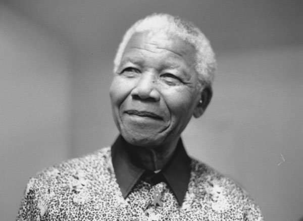

A man that fought against the white Domination in South Africa

Nelson Mandela, former president of South African 1994
Here is a Timeline of Nelson Mandela:
1918 - born in Madiba clan in the village of Mvezo,
in the Eastern Cape
1930 - his father died
1943 - He completed his BA through the University
of South Africa
1944 - joined the African National Congress
1952 - he was chosen as the National
Volunteer-in-Chief of the Defiance Campaign with Maulvi Cachalia as
his deputy
1956 - Mandela was arrested in a countrywide police
swoop
1958 - a married a social worker, Winnie Madikizela
1962 - using the adopted name David Motsamayi,
Mandela secretly left South Africa.
1963 - joined 10 others on trial for sabotage in
what became known as the Rivonia Trial
1964 - Mandela and seven other accused and were
convicted and the next day were sentenced to life imprisonment.
1968 - his mother died
1969 - his elderst son Thembi died
1988 - he was taken to hospital where he was
diagnosed with tuberculosis.
1993 - In 1993 he and President FW de Klerk jointly
won the Nobel Peace Prize
1994 - on thev27 April he voted for the first time
in his life
1994 - On 10 May he was inaugurated as South
Africa’s first democratically elected President.
1998- On his 80th birthday he married Graça Machel,
his third wife.
1999 - True to his promise, Mandela stepped down
after one term as President.
2013 - He died at 95 in his home in Johannesburg .
“I have fought against white domination, and I have fought against black domination.
I have cherished the ideal of a democratic and free society in which all persons
live together in harmony and with equal opportunities. It is an ideal which I hope
to live for and to achieve. But if needs be, it is an ideal for which I am prepared
to die. ”
Speech from the Dock quote by Nelson Mandela on 20 April 1964